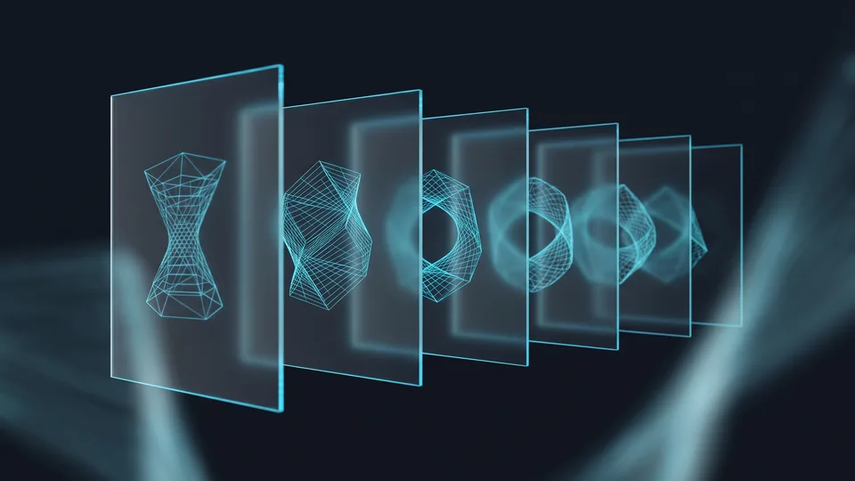

How Does Image Quality Change the Buying Decision?
Image quality lowers the sense of risk for a user who cannot handle the product, and it speeds the decision up. A clear angle, the right light and a familiar context answer the questions on the page itself. Someone whose questions have run out goes to the basket sooner. If the uncertainty carries on, the decision is postponed and the user moves to a competitor's tab. Quality here is not a matter of aesthetics but of information.
The e-commerce product image is the visual evidence a user tries the product on in their mind with. In a shop that job is done by the sense of touch. On a screen the only evidence is the shot.
The number of businesses going digital in Türkiye is rising fast; the Ministry of Trade's ETBİS report — ETBİS is Türkiye's central e-commerce information system — sets out how far the market has widened. In a widening market, similar products compete in the same set of results; what tells them apart is, more often than not, the photograph.
On a listing page the elimination is over in seconds. If the lead shot is a weak e-commerce product image, the page never gets opened at all.
What does a customer who cannot touch look for?
The user looks for texture, size and true colour. If one of those three isn't in the shot, the question stays in their mind. Someone left with a question goes back to comparing. A weak e-commerce product image doesn't grow the product, it grows the doubt.How does visual consistency build trust?
A set shot under the same light brings the catalogue into a single brand language. If the customer can match what comes out of the box to what they saw on the page, disappointment falls. We don't make claims without measuring; track your reasons for return from your own dashboard. In e-commerce, product images are a brand's most visible signature.What Do Angle and Light Reveal in a Single Shot?
The angle reveals the product's character; the light reveals its texture and its true colour. The wrong angle hides the size, and hard light flattens the surface. In a correct setup, the weave of a fabric and the sheen of a metal read within the same shot. The user isn't left guessing at the product; they see it and decide. Together, those two variables form the backbone of a strong e-commerce product image.
Shoot the same bag from overhead and from three-quarters; the two shots look like two different products. The angle is the camera position that decides which surface of the product comes forward. On a bag it is the internal volume; on a shoe it is the profile of the sole that settles the decision.
The light, meanwhile, is the guardian of colour fidelity. If a product that looks beige on the shelf drifts pink on screen, a return is already at the door. It is the light that closes the distance between the product out of the box and the photograph on the page.
The setup doesn't have to be complicated; a single softbox, one reflector and a fixed tripod will rescue most categories.
The choice of angle carries the product's character
Every category asks for its own angle; on furniture a three-quarter view conveys the volume, while on jewellery a macro shot makes the craftsmanship visible. Drawing up a category-specific angle list is the first step towards making product images look consistent across your e-commerce site. Write the list before the studio day.Light protects texture and colour
Soft light manages the shadow and keeps the texture standing. Hard light from above flattens the surface. A set with the colour calibration done properly also reduces the difference between screens. If you shoot the same product on two different days, write the lighting note down.Is a white backdrop right for every product?
A white backdrop is the standard on marketplaces; on your own site it isn't compulsory. On dark products the contrast drops and the edges disappear. A neutral grey or a textured surface gives a more legible result with those products.Why Does a Context Shot Make a Product Easier to Understand?
A context shot shows the product in the setting it is used in, closing the questions of scale and purpose in a single frame. The studio shot introduces the product; the scene shot ties it to life. This is where the user answers the question "how will this look at my place". On its own, the studio shot falls short in most categories. When the two work together, the page gains its persuasive power.
A desk lamp against an empty backdrop looks sizeless; the same lamp on a working desk gives away its dimensions at once. A context shot is the photograph you take in the product's real setting of use. The scene shouldn't be overstaged; fake décor sells the décor, not the product.
Read your mobile share from your own analytics rather than from general statistics; TurkStat — TurkStat is Türkiye's statistical institute — measures household ICT usage regularly, while the breakdown of your own catalogue sits in your dashboard and nowhere else. On a small screen, the context shot is the fastest-read part of an e-commerce product image. The template needs to make room for that shot too; in the build of an e-commerce site, the order of the gallery has a direct effect on the decision.
How is a sense of scale built?
A familiar object, a human hand or a placement within a room conveys scale. A size table on its own isn't enough. The user reads the number, then sees the shot and is certain. In categories with no scale shot, size-related returns take first place.How many different shots are needed?
Five shots are enough for most catalogues: the main hero, a complementary angle, a macro detail, a scale reference and a scene of use. Raise the number in line with the product's complexity. That five-shot skeleton keeps e-commerce product images consistent with one another. Fix the order; let the same sequence repeat on every product.How Do You Audit the Images You Already Have?
To audit your own catalogue, score the shot set of pages with high traffic but low conversion against fixed criteria. Number of angles, consistency of light, scale reference and detail shot — four headings will do the job. Put the low-scoring pages in the queue first. Looking at a table rather than an opinion moves the budget to the right place. A refresh that starts without measurement scatters the money.
Open your catalogue; write out the shot count of the first twenty products side by side. An image audit is a short round of checks in which the existing shots are scored one by one. The list decides, not habit.
- List the 20 product pages with the highest traffic.
- Write down the number and type of shots for each product.
- Mark the pages with no scale reference.
- Set aside the shots where you can see a colour shift.
- Complete the missing shots in a single shooting day.
Read the results category by category; put every low-scoring e-commerce product image on the refresh list. On the e-commerce SEO side, image naming and alternative text go onto the same list.
Which signals should we watch?
Product page conversion rate, add-to-basket rate and reason for return — three signals are enough. Record the four-week average before you make the change. Once the new set of e-commerce product images is live, measure the same window again. If there is a difference, the evidence is yours.Who should run the audit?
Let the product manager and marketing run the scoring together, and bring the photographer into the list at the next step. Two pairs of eyes give a more accurate result than one person's habits. Keep the table in a shared file.“The number of businesses trading online, 600,800 in 2024, rose to 634,611 in 2025.”
— Ministry of Trade, The Outlook for E-Commerce in Türkiye 2025
Refresh Your Product Images with a Professional Shoot
In a professional shoot, a category-specific angle list and a fixed lighting setup bring the catalogue into one language. We start the work with the pages that have high traffic but low conversion, and draw up the shot plan together with you. We produce every e-commerce product image to the same criteria. We measure the state you are in now, then compare what follows publication using conversion rate, add-to-basket rate and reason for return.
The shooting plan is the production schedule that sets out which product is photographed with which shot set. Before the studio day we settle the products, the colour codes and the order of priority. In campaign periods we schedule the product video and the photo shoot on the same day; that way the preparation cost is shared.
Product images are the most reused production asset in e-commerce. Once the catalogue's language has settled, the same shots go into the ad set on the performance marketing side. Graphic design turns them into banners and social graphics. If you'd like to talk through the shot plan, filling in the quote form is all it takes; for anything more detailed, the contact page is open. We don't commit the whole budget in one go; we start with a pilot category.
Where do we start?
The first week produces the catalogue audit and the priority list; the second week settles the production plan and the backdrop decisions. The third week brings the studio day and delivery. In the fourth week we read the numbers together.Which products should be brought forward?
Pages with high traffic but low conversion come first. New releases wait in second place. The classics that have sat with the same shot for years come third. Let potential set the priority, not turnover.
Shot Types and Their Role in the Decision
| Shot type | What it tells the user | What happens when it is missing |
|---|---|---|
| Hero shot | The product's overall form and colour | Clicks in the listing fall |
| Complementary angle | The surfaces that stay hidden, and the volume | The decision is left hanging |
| Macro detail | Texture, stitching and material quality | Doubt about quality lingers |
| Scale reference | The product's real size | Size-related returns rise |
| Scene of use | Where the product sits in daily life | The product stays abstract |
Appearance is the one area in e-commerce with no room for negotiation. If your product is good, you have to show it in the shot; a weak shot makes even a good product look ordinary. Audit your catalogue over a weekend, starting with the twenty products that get the most traffic. Once the new set is live, you'll see the difference in your dashboard. That is precisely where the return on investing in e-commerce product images is read.